fablr
A book app for people who spend more time picking a book than reading one. React Native and Supabase, matching on what a story actually does instead of on its cover.
I study computer science in Rostock and work in three places at once: on LLM agents at the university’s Chair of Software Engineering, on sensor systems for animal health at Fraunhofer IGD, and on replacing legacy Java with Django at Yachthafenresidenz Hohe Düne.
AI, IoT or plain software engineering: the label matters less to me than the problem. I just like solving them, preferably ones that have to survive outside a demo, whether that is in a barn, on a microcontroller, or inside somebody else’s legacy codebase.
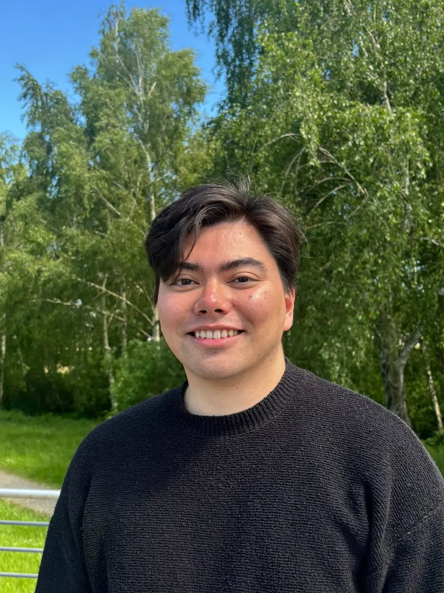
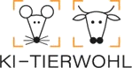
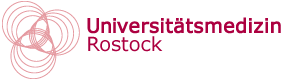
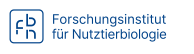
Hohe Düne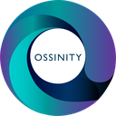
Ossinity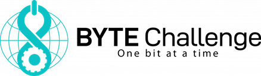
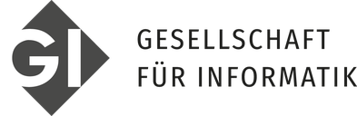
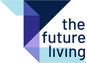
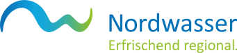
Universitätsmedizin Rostock (IEC) Forschungsinstitut für Nutztierbiologie Universität Rostock (AUF) Universität Rostock (IEF) Hochschule Neubrandenburg Friedrich-Loeffler-Institut Universität Greifswald
Associated partners: Fraunhofer IGD Helmholtz-Institut für One Health BioCon Valley LMU München
I finished my B.Sc. in computer science at the University of Rostock in 2025 and stayed on for the master’s, with a focus on AI and software engineering. The bachelor took me longer than the standard seven semesters, because I was working alongside it to help support my family.
I write Python and PyTorch for the machine learning side, Django and PostgreSQL for backends, and C or C++ when the target is an ESP32 or a Raspberry Pi. The part I like most is the seam between them: turning a noisy sensor reading into something a system can actually act on.
I have also taught on and off since 2023, running tutorials for prospective students in the university’s Junior Study programme and volunteering for STEM courses at BYTE Challenge.
A book app for people who spend more time picking a book than reading one. React Native and Supabase, matching on what a story actually does instead of on its cover.
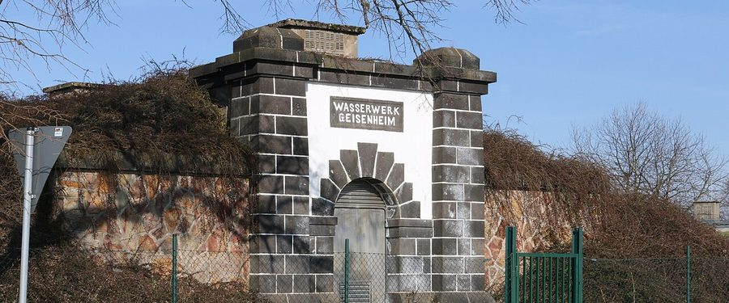
A Summer of Solutions practice-transfer project with Nordwasser GmbH, alongside Fraunhofer IGP and The Future Living. I owned the technical concept, architecture and data protection in a team of five: a vendor-independent telematics concept for 138 vehicles over OBD dongles, keeping the data in-house, delivered as a 40+ page specification with a cost-benefit calculation, CO₂ estimate and rollout plan.
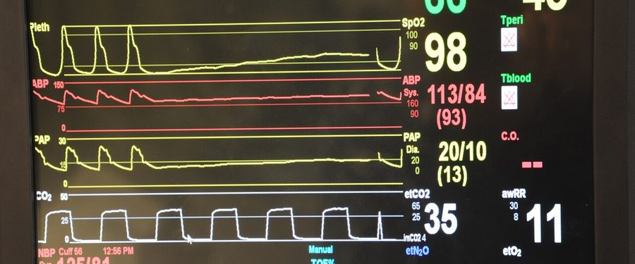
Healthcare Hackathon Berlin, on a case with caire: estimating vital parameters from video with remote PPG, plus LLM-based evaluation and alerting tied into the patient history.
Top 3 of over 300 participants on a Finanz Informatik case. An agent that reads a business requirement, splits it into developer tasks, and opens the pull requests for them.
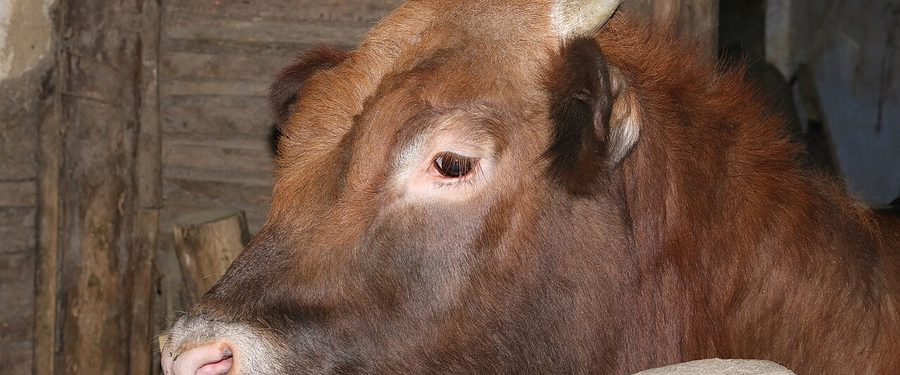
A smart jacket for calves, built from Arduino and Raspberry Pi hardware, that watches for early signs of respiratory illness, with a PyTorch and OpenCV pipeline behind it. Annotated in CVAT, tested in a real barn.
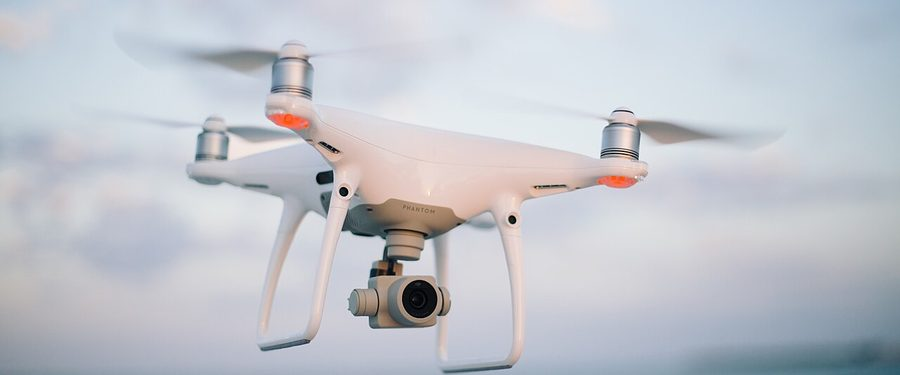
A discrete-event OMNeT++ model of drones talking to each other over a 5G network: how the link holds up under load, with throughput and latency measured rather than guessed at. Built as a university project.
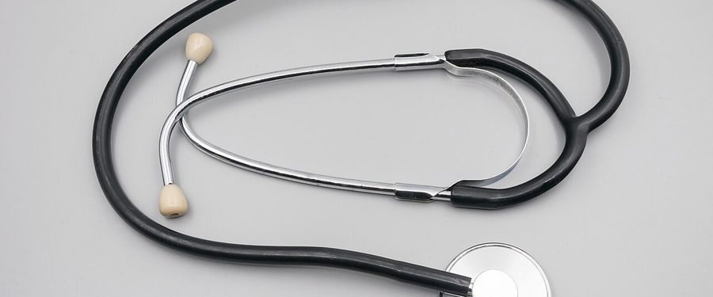
An MCP server with no dependencies that gives a general model a medical reference to work from, including structured extraction of the statistics buried in papers.
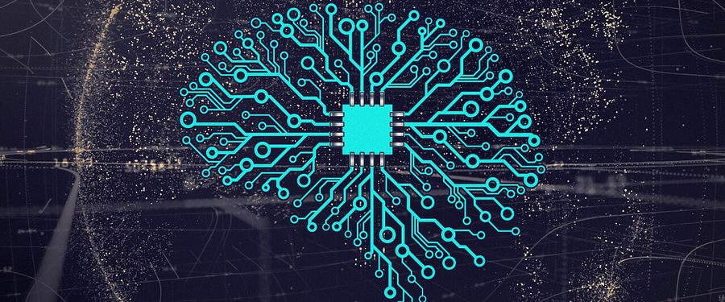
GPT-2 written from scratch in PyTorch, because reading about attention is not the same as implementing it. Embeddings, causal multi-head attention, training loop.
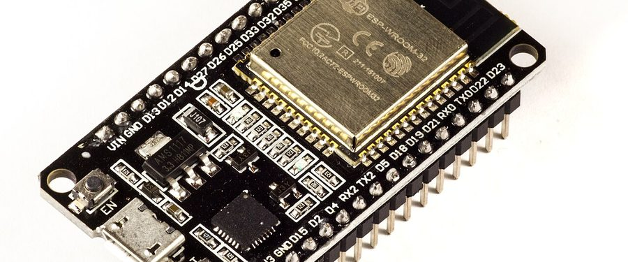
Two ESP32 boards talking to each other with encrypted messages, no router and no internet anywhere in between.
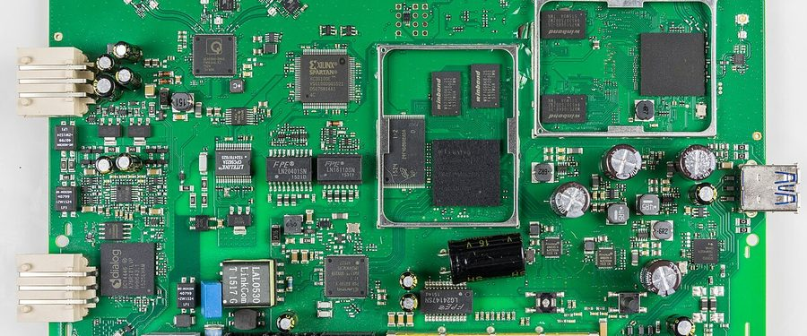
Reverse engineering my own router: the FTP boot window accepts an unsigned image before any authentication, which is enough to recover stored credentials from a device you have physical access to. Claude Code helped as a static analyser on the firmware.
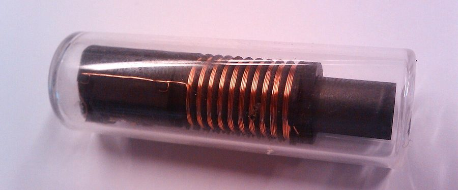
A small open-source tool for polling and reading RFID tags from a reader, made to be simple to script against rather than a heavy framework.
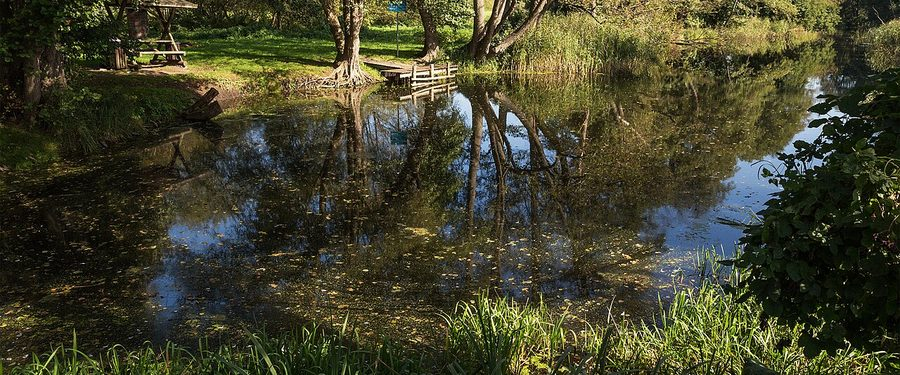
An open platform that turns cheap sensors into live maps of German rivers. I contribute code; the project was shown at re:publica 2026.
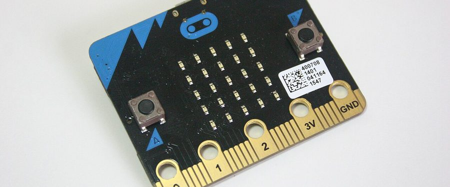
Free online STEM courses for school students who might otherwise never see a line of code. Run by volunteers under the Gesellschaft für Informatik.
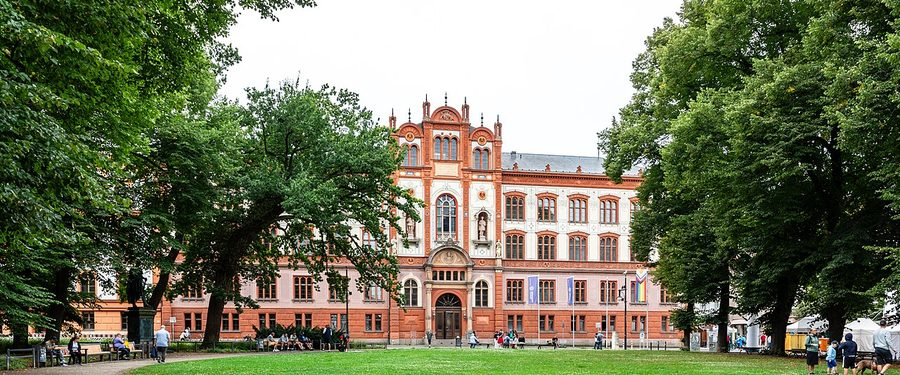
Elected member of the student council (StuRa) at the University of Rostock, and a member of the Gesellschaft für Informatik.
Conferences, long books, and dwarf colonies that end badly. I train to clear my head and read to fill it again.
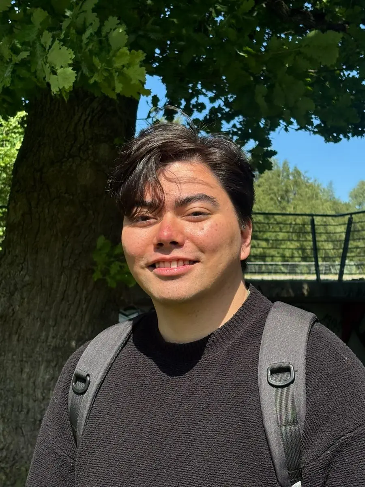
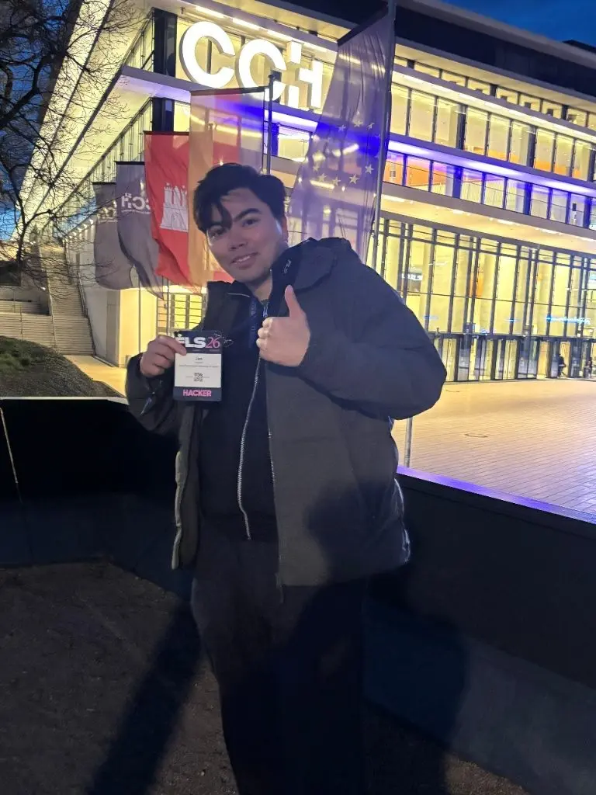
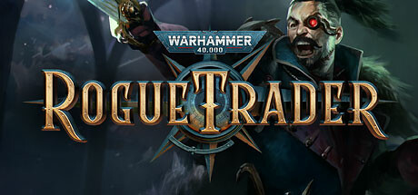
A long CRPG in the Koronus Expanse, where most decisions are bad and you pick anyway.
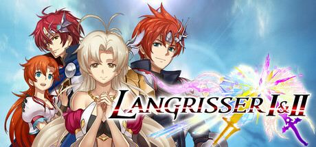
Old tactical RPGs. Unit matchups, terrain, and story paths that fork properly.
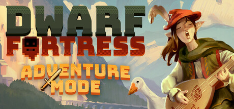
Losing is fun. A colony simulated down to the last detail, right up to the moment it collapses.
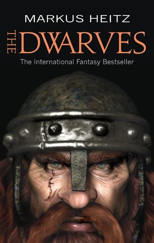
Markus Heitz on Tungdil Goldhand and the defence of Girdlegard.
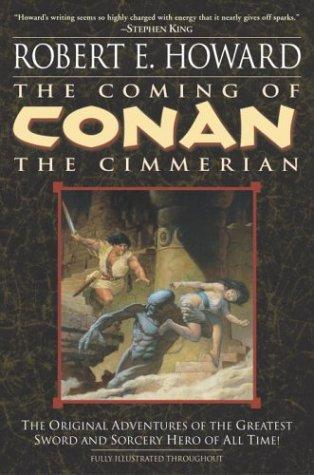
Robert E. Howard’s original sword and sorcery stories, still the best of the genre.
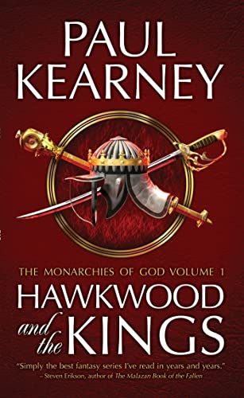
Paul Kearney’s gunpowder fantasy about war, religion and discovery.
If you want to get in touch, just write me. A project, a research idea, a job, or an argument about fantasy books are all welcome. I am based in Rostock and happy to work remotely.
janvictorninogrundl@gmail.com